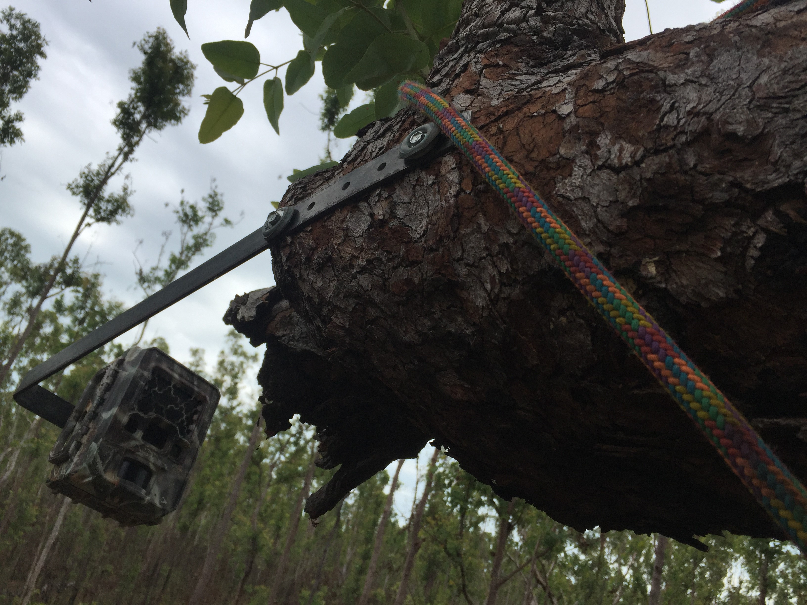
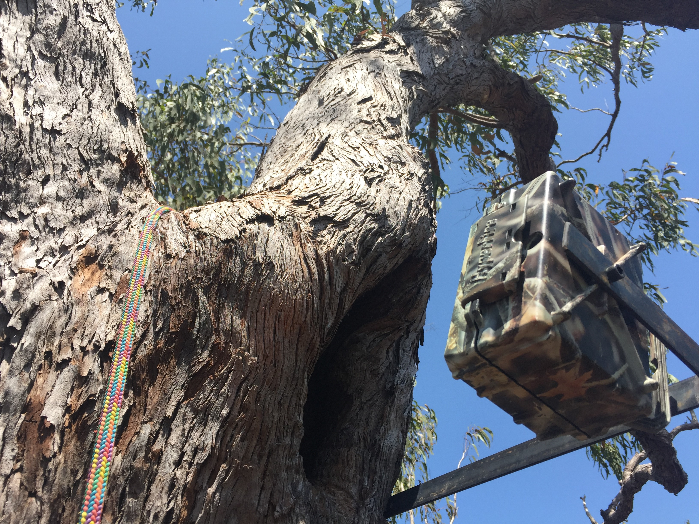

Tree hollows in tropical savanna
Hollows in trees and logs are important habitat for a lot of wildlife in tropical savannas. Hollows are generally found in the eucalyptus species (Wollybutt and Stringybark trees) that dominate the savanna. The availability of hollows can limit populations of species that are dependent on them for their survival.
The abundance of hollows in the tropical savanna of Australia are primarily driven by termites, that hollow out the tree from the inside. Tropical savannas experience a lot of disturbance by storms, cyclones and fire that can kill and remove trees from the woodland.


Hollows as homes
There are many threatened species in tropical savanna that nest in hollows, however, there has been little research into the types of hollows they like to nest in and whether different species interact with another.
In Northern Australia some species of small mammals have declined very rapidly over the recent decades. Some of which like to nest in hollows, these include the brush-tailed rabbit-rat, black-footed tree rat and northern brushtail possum. But there are also many other species including reptiles that like to rest in hollows as well.
We wanted to find out some of the species that use hollows in the savanna and what types of hollows we found them most commonly at.
Check out these videos of some of our releases!
How we collect the data
We placed motion sensing cameras on hollows in the savanna on the Melville Island, part of the Tiwi Island’s 80km north of Darwin. Cameras were installed facing hollows on logs, dead trees and live trees.
For the tall trees we had to use special tree climbing techniques to install the cameras.
Would you like to help us identify the species we caught on camera?
 {kind=link}
{kind=link}